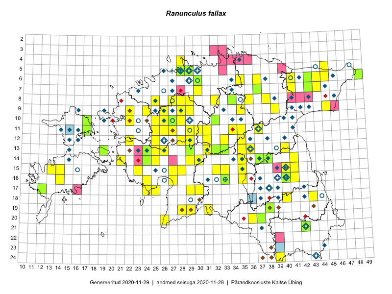

Ranunculus fallax
Uuendatud: 2016-12-07
Kaardile koondatud taksonid: Ranunculus fallax (Wimm. & Grab.) Sloboda

Kaart põhineb 98 kirjel, neist vaatlusi 97 ja eksemplare 1. Taksonit on leitud 80 ruudust.
| Ruut | Vaatleja(d) | Vaatlusaeg | Kirje tüüp | Viide andmebaasikirjele |
|---|---|---|---|---|
| 12-28 | Tiit Hallikma, Toomas Kukk, Indrek Tammekänd | 2015-06-09 | ruut/ala | vaata PlutoFis |
| 16-24 | Peedu Saar, Liina Oja | 2015-05-21 | ruut/ala | vaata PlutoFis |
| 05-45 | Tiit Hallikma, Toomas Kukk | 2015-07-21 | ruut/ala | vaata PlutoFis |
| 12-33 | Toomas Kukk, Indrek Tammekänd | 2015-05-10 | ruut/ala | vaata PlutoFis |
| 15-23 | Ott Luuk, Jaak-Albert Metsoja | 2015-05-27 | ruut/ala | vaata PlutoFis |
| 12-22 | Ott Luuk, Jaak-Albert Metsoja | 2015-05-27 | ruut/ala | vaata PlutoFis |
| 06-41 | Toomas Kukk, Tiit Hallikma | 2015-07-24 | ruut/ala | vaata PlutoFis |
| 18-40 | Malle Leht | 2015-05-12 | ruut/ala | vaata PlutoFis |
| 11-29 | Toomas Kukk, Tiit Hallikma | 2015-06-11 | ruut/ala | vaata PlutoFis |
| 07-43 | Toomas Kukk, Tiit Hallikma | 2015-05-30 | ruut/ala | vaata PlutoFis |
| 07-41 | Tiit Hallikma, Toomas Kukk | 2015-07-23 | ruut/ala | vaata PlutoFis |
| 07-44 | Tiit Hallikma, Toomas Kukk | 2015-07-20 | ruut/ala | vaata PlutoFis |
| 06-43 | Tiit Hallikma, Toomas Kukk | 2015-05-30 | ruut/ala | vaata PlutoFis |
| 17-30 | Ott Luuk, Hannes Pehlak | 2015-06-11 | ruut/ala | vaata PlutoFis |
| 14-29 | Ott Luuk, Hannes Pehlak | 2015-06-10 | ruut/ala | vaata PlutoFis |
| 12-31 | Ott Luuk, Hannes Pehlak | 2015-06-09 | ruut/ala | vaata PlutoFis |
| 11-34 | Ott Luuk, Hannes Pehlak | 2015-06-08 | ruut/ala | vaata PlutoFis |
| 19-31 | Ott Luuk, Indrek Tammekänd | 2015-05-22 | ruut/ala | vaata PlutoFis |
| 08-34 | Jana-Maria Habicht, Ester Valdvee | 2015-05-09 | ruut/ala | vaata PlutoFis |
| 11-31 | Ott Luuk, Toivo Sepp | 2015-05-18 | ruut/ala | vaata PlutoFis |
| 11-30 | Ott Luuk, Toivo Sepp | 2015-05-18 | ruut/ala | vaata PlutoFis |
| 13-40 | Eeva-Maria Jeletsky, Tarmo Niitla | 2015-04-26 | ruut/ala | vaata PlutoFis |
| 20-26 | Ott Luuk, Eerik Leibak, Liisa Rennel | 2015-05-20 | ruut/ala | vaata PlutoFis |
| 17-25 | Ott Luuk, Eerik Leibak | 2015-05-21 | ruut/ala | vaata PlutoFis |
| 17-24 | Ott Luuk, Eerik Leibak | 2015-05-21 | ruut/ala | vaata PlutoFis |
| 11-29 | Ott Luuk, Toivo Sepp | 2015-08-20 | ruut/ala | vaata PlutoFis |
| 08-38 | Meeli Mesipuu, Maret Gerz | 2015-05-12 | punkt | vaata PlutoFis |
| 15-33 | Maria Abakumova | 2015-05-11 | ruut/ala | vaata PlutoFis |
| 16-41 | Karin Kikas, Elle Rajandu | 2015-04-23 | ruut/ala | vaata PlutoFis |
| 13-36 | Toivo Sepp, Eerik Leibak | 2015-05-13 | ruut/ala | vaata PlutoFis |
| 08-36 | Toivo Sepp, Eerik Leibak | 2015-05-12 | ruut/ala | vaata PlutoFis |
| 08-36 | Toivo Sepp, Eerik Leibak | 2015-05-12 | punkt | vaata PlutoFis |
| 15-13 | Mari Reitalu, Oliver Parrest | 2015-05-14 | ruut/ala | vaata PlutoFis |
| 06-43 | Meeli Mesipuu, Liina Oja | 2015-04-26 | punkt | vaata PlutoFis |
| 14-30 | Liina Oja, Ott Luuk | 2015-05-10 | ruut/ala | vaata PlutoFis |
| 14-29 | Liina Oja, Ott Luuk | 2015-05-10 | ruut/ala | vaata PlutoFis |
| 13-29 | Liina Oja, Ott Luuk | 2015-05-09 | ruut/ala | vaata PlutoFis |
| 06-43 | Thea Kull, Meeli Mesipuu, Eerik Leibak | 2014-07-09 | ruut/ala | vaata PlutoFis |
| 15-41 | Karin Kikas, Elle Rajandu | 2015-04-24 | ruut/ala | vaata PlutoFis |
| 16-40 | Elle Rajandu | 2015-04-27 | punkt | vaata PlutoFis |
| 13-31 | Ott Luuk, Liina Oja | 2015-05-10 | ruut/ala | vaata PlutoFis |
| 11-35 | Ott Luuk, Liina Oja | 2015-05-11 | ruut/ala | vaata PlutoFis |
| 13-35 | Ott Luuk, Liina Oja | 2015-05-11 | ruut/ala | vaata PlutoFis |
| 12-35 | Ott Luuk, Liina Oja | 2015-05-11 | ruut/ala | vaata PlutoFis |
| 06-37 | Ott Luuk, Liina Oja | 2015-05-13 | ruut/ala | vaata PlutoFis |
| 11-34 | Maret Gerz, Meeli Mesipuu | 2015-05-11 | ruut/ala | vaata PlutoFis |
| 09-29 | Toivo Sepp, Aat Sarv | 2015-05-06 | ruut/ala | vaata PlutoFis |
| 12-25 | Aat Sarv | 2015-05-27 | ruut/ala | vaata PlutoFis |
| 10-25 | Aat Sarv | 2015-05-31 | ruut/ala | vaata PlutoFis |
| 06-44 | Timo Luhamäe, Eerik Leibak | 2015-05-30 | ruut/ala | vaata PlutoFis |
| 10-26 | Aat Sarv | 2015-05-31 | ruut/ala | vaata PlutoFis |
| 11-29 | Toivo Sepp, Ott Luuk | 2015-05-18 | ruut/ala | vaata PlutoFis |
| 15-13 | Mari Reitalu, Oliver Parrest | 2015-05-14 | punkt | vaata PlutoFis |
| 24-39 | Maret Gerz, Jaak-Albert Metsoja, Ott Luuk, Toomas Kukk, Meeli Mesipuu, Thea Kull | 2014-06-09 | ruut/ala | vaata PlutoFis |
| 16-35 | Aat Sarv | 2015-07-01 | ruut/ala | vaata PlutoFis |
| 14-35 | Aat Sarv | 2015-05-22 | ruut/ala | vaata PlutoFis |
| 15-35 | Aat Sarv | 2015-05-22 | ruut/ala | vaata PlutoFis |
| 15-32 | Aat Sarv | 2015-05-23 | ruut/ala | vaata PlutoFis |
| 09-28 | Aat Sarv | 2015-05-02 | ruut/ala | vaata PlutoFis |
| 11-26 | Thea Kull, Meeli Mesipuu, Eerik Leibak | 2014-06-11 | ruut/ala | vaata PlutoFis |
| 10-26 | Thea Kull, Meeli Mesipuu | 2014-06-12 | ruut/ala | vaata PlutoFis |
| 11-25 | Hanna-Eliisa Luts, Tõnu Ploompuu | 2015-07-28 | ruut/ala | vaata PlutoFis |
| 08-27 | Aat Sarv | 2015-05-18 | ruut/ala | vaata PlutoFis |
| 10-28 | Aat Sarv | 2015-05-16 | ruut/ala | vaata PlutoFis |
| 20-36 | Ott Luuk, Tiit Hallikma | 2016-04-27 | ruut/ala | vaata PlutoFis |
| 17-30 | Ott Luuk, Tiit Hallikma | 2016-04-28 | ruut/ala | vaata PlutoFis |
| 17-29 | Ott Luuk, Tiit Hallikma | 2016-04-28 | ruut/ala | vaata PlutoFis |
| 15-28 | Ott Luuk, Tiit Hallikma | 2016-04-28 | ruut/ala | vaata PlutoFis |
| 14-25 | Ott Luuk, Tiit Hallikma | 2016-04-29 | ruut/ala | vaata PlutoFis |
| 13-26 | Ott Luuk, Tiit Hallikma | 2016-04-29 | ruut/ala | vaata PlutoFis |
| 13-25 | Ott Luuk, Tiit Hallikma | 2016-04-29 | ruut/ala | vaata PlutoFis |
| 16-14 | Meeli Mesipuu | 2016-05-05 | punkt | vaata PlutoFis |
| 14-35 | Ott Luuk, Thea Kull | 2016-05-05 | ruut/ala | vaata PlutoFis |
| 08-32 | Thea Kull, Meeli Mesipuu | 2016-05-11 | ruut/ala | vaata PlutoFis |
| 08-29 | Thea Kull, Meeli Mesipuu | 2016-05-13 | ruut/ala | vaata PlutoFis |
| 11-26 | Ott Luuk, Tiit Hallikma | 2016-05-12 | ruut/ala | vaata PlutoFis |
| 09-45 | Eerik Leibak | 2016-05-18 | ruut/ala | vaata PlutoFis |
| 12-22 | Ott Luuk, Tiit Hallikma | 2016-05-14 | ruut/ala | vaata PlutoFis |
| 07-30 | Meeli Mesipuu, Thea Kull | 2016-05-13 | ruut/ala | vaata PlutoFis |
| 08-29 | Thea Kull, Ott Luuk | 2016-05-30 | ruut/ala | vaata PlutoFis |
| 19-29 | Toomas Kukk, Tiit Hallikma | 2016-06-03 | ruut/ala | vaata PlutoFis |
| 09-22 | Tõnu Ploompuu | 2015-07-14 | ruut/ala | vaata PlutoFis |
| 10-22 | Tõnu Ploompuu | 2015-05-20 | ruut/ala | vaata PlutoFis |
| 11-37 | Eeva-Maria Jeletsky, Tarmo Niitla | 2016-06-09 | ruut/ala | vaata PlutoFis |
| 12-29 | Mari Reitalu, Eerik Leibak | 2016-07-06 | ruut/ala | vaata PlutoFis |
| 09-35 | Toomas Kukk, Tiit Hallikma | 2016-07-25 | ruut/ala | vaata PlutoFis |
| 09-39 | Ott Luuk, Eerik Leibak | 2016-08-09 | ruut/ala | vaata PlutoFis |
| 15-14 | Maret Gerz, Peedu Saar | 2016-08-12 | ruut/ala | vaata PlutoFis |
| 04-28 | Sander Laherand, Tõnu Ploompuu, Nele Jõessar | 2016-07-25 | ruut/ala | vaata PlutoFis |
| 16-27 | Tiit Hallikma, Tõnu Ploompuu | 2016-06-20 | ruut/ala | vaata PlutoFis |
| 15-27 | Tiit Hallikma, Tõnu Ploompuu | 2016-06-20 | ruut/ala | vaata PlutoFis |
| 14-30 | Hannes Pehlak, Tõnu Ploompuu, Marko Veinbergs | 2016-07-21 | ruut/ala | vaata PlutoFis |
| 19-28 | Ott Luuk, Peedu Saar | 2016-06-09 | ruut/ala | vaata PlutoFis |
| 14-21 | Toomas Kukk | 2013-05-17 | ruut/ala | vaata PlutoFis |
| 14-21 | Toomas Kukk | 2012-06-25 | ruut/ala | vaata PlutoFis |
| 09-22 | Jaak-Albert Metsoja, Mari Metsoja | 2016-07-06 | ruut/ala | vaata PlutoFis |
| 14-41 | Elle Rajandu, Karin Kikas | 2015-04-28 | ruut/ala | vaata PlutoFis |
| 08-34 | Jana-Maria Habicht | 2015-05-09 | eksemplar | vaata PlutoFis |